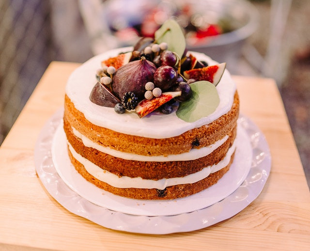

Tortas da Vovó
vários sabores para adoçar os netos!
vários sabores para adoçar os netos!
Encontre na tortas da vovó, tudo que voçe precisa para sua sobremesa, café da manhã, festas e muito mais

Mais de 25 tipos de sabores Morango, Maracuja, Pêssego, Limão, Maça, Trufa de Chocolate ao Leite, Trufa de Chocolate Branco, Mousse de Leite Ninho e muitos outros.

Mais de 10 tipos de Bolos Bolo brigadeiro, Bolochocolate com calda, Bolo de banana com chocolate, Bolo de Chocolate com Doce de Leite, Bolo de Cenoura com Cobertura de Chocolate.
Cinco opções diferentes de torta de morango. Torta-bombom de chocolate e morango, Torta-musse com calda de morango, Torta de chocolate e morango, Torta-bombom de chocolate e morango, Torta de morango e amêndoa.
Foi na Grécia antiga que a Torta surgiu. Ela era uma oferenda que os humanos ofereciam à Deusa Ártemis, divindade ligada às colheitas, à natureza, à caça e à fertilidade, o doce oferecido à deusa grega era redondo, tendo uma ligação com a lua. No Brasil, é um alimento cozido ao forno, feito com massa de farinha e recheado com carne, camarão, palmito ou ingredientes doces, como a torta holandesa.
